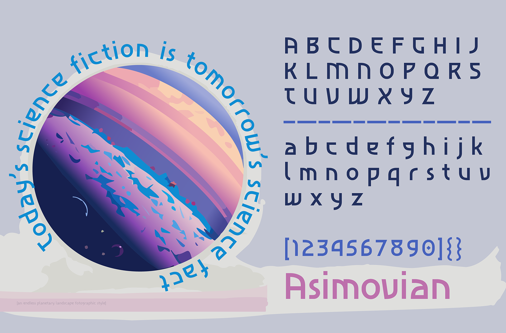
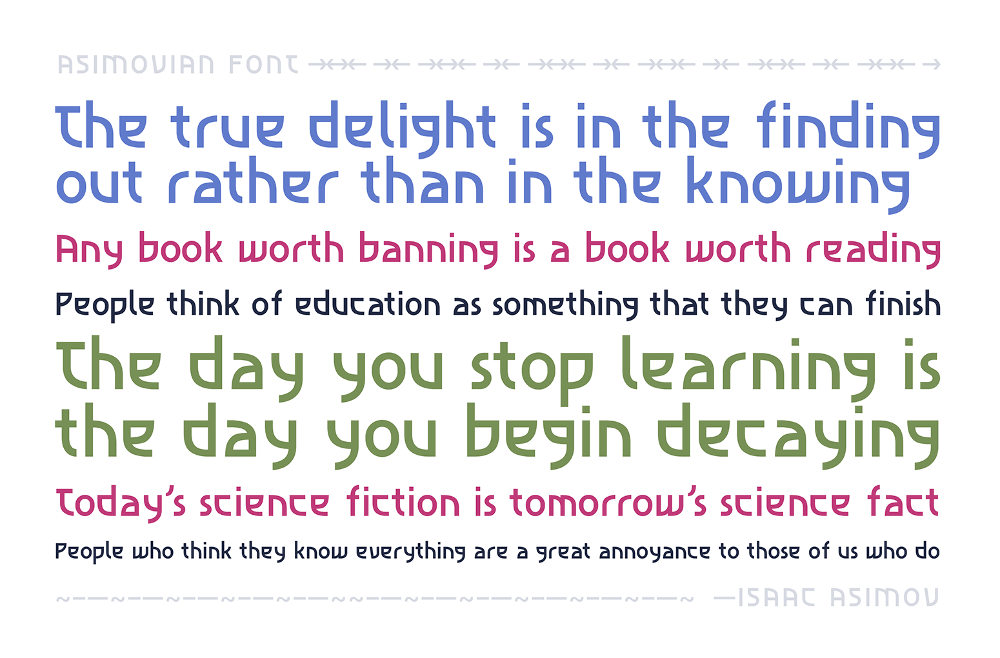
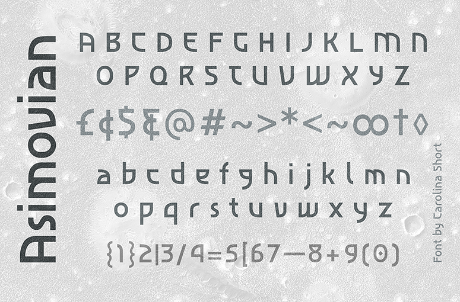
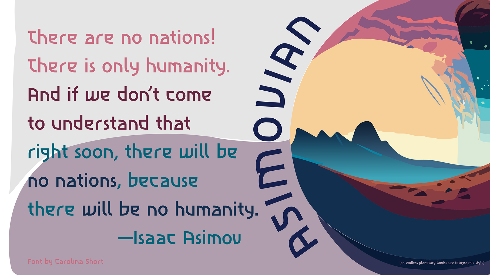
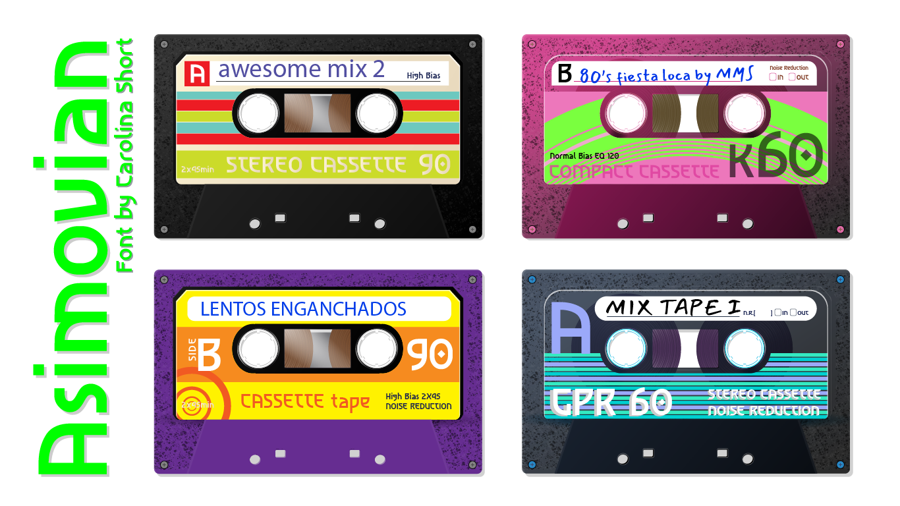

Asimovian is a font inspired by the sleek geometry of a logotype, where letters seamlessly connect through square or circular features. Initially conceived as an uppercase typeface, it later expanded to include a set of lowercase characters, completing its alphabet.
To contribute, see github.com/carolinashort/asimovian
Asimovian harmoniously blends sharp edges with rounded shapes, reminiscent of Art Deco typefaces infused with a futuristic essence, echoing the narrative allure of Isaac Asimov's Foundation series.
With a uniform weight and select glyphs crafted with idiosyncratic structures, Asimovian exudes character and distinctiveness, making it an ideal choice as a display font for specialized applications.
  